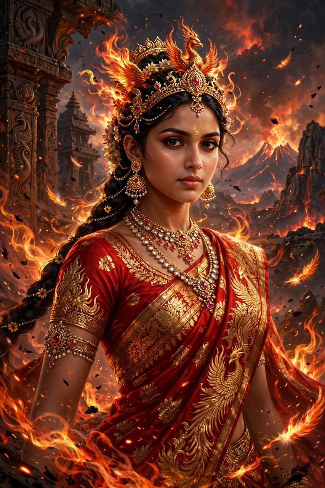

Draupadi
Draupadi (Sanskrit: द्रौपदी, IAST: Draupadī), also known as Krishnaa, Panchali, and Yajnaseni, is the principal female character of the Hindu epic Mahabharata. Born from a sacrificial fire (yajna) as the daughter of King Drupada of Panchala, she became the common wife of the five Pandava brothers. Her humiliation in the Kaurava court after the game of dice is one of the epic's most consequential episodes and a principal cause of the Kurukshetra War.

| Draupadi | |
|---|---|
| Other names | Krishnaa, Panchali, Yajnaseni, Sairandhri |
| Affiliation | Mahabharata, Panchala, Pandavas |
| Parents | Drupada (father) |
| Siblings | Dhrishtadyumna, Shikhandi |
| Spouses | Yudhishthira, Bhima, Arjuna, Nakula, Sahadeva |
| Children | Upapandavas: Prativindhya, Sutasoma, Srutakirti, Satanika, Srutasena |
Birth
King Drupada performed a great sacrifice to obtain a son who would kill Drona. From the sacrificial fire arose first Dhrishtadyumna and then a full-grown maiden of extraordinary beauty — Draupadi, called Yajnaseni, "she who is born of the sacrifice." A heavenly voice proclaimed that she would be instrumental in the destruction of the Kshatriyas.
Marriage
At her svayamvara (self-choice ceremony), the disguised Arjuna won her hand by stringing a mighty bow and striking a revolving fish target by its reflection. When the brothers returned and announced to their mother Kunti that they had brought alms, she unknowingly instructed them to share it among themselves; to uphold her word, Draupadi married all five brothers — an arrangement sanctioned by the sage Vyasa with accounts of her previous births.
The dice game and disrobing
After Yudhishthira lost everything in the dice game, including Draupadi, she was dragged by Dushasana into the assembly hall. Her legal question — whether a man who had lost himself could stake his wife — went unanswered by the elders. When Dushasana attempted to disrobe her, tradition holds that her garment became endless through the grace of Krishna. Draupadi's vow not to tie her hair until it was anointed with Dushasana's blood became a symbol of the Pandavas' grievance.
Exile and war
During the thirteenth year of exile, spent incognito at the court of King Virata, Draupadi served Queen Sudeshna as Sairandhri and was protected by Bhima from the advances of Kichaka. Her five sons, the Upapandavas, were killed by Ashvatthama in the night raid after the war's end. In the final journey of the Pandavas, Draupadi was the first to fall on the road to heaven.
Legacy
Draupadi is venerated as a goddess (Draupadi Amman) in parts of South India, with fire-walking festivals in her honour, and remains a powerful literary figure — celebrated for her intellect, eloquence, and refusal to accept injustice.